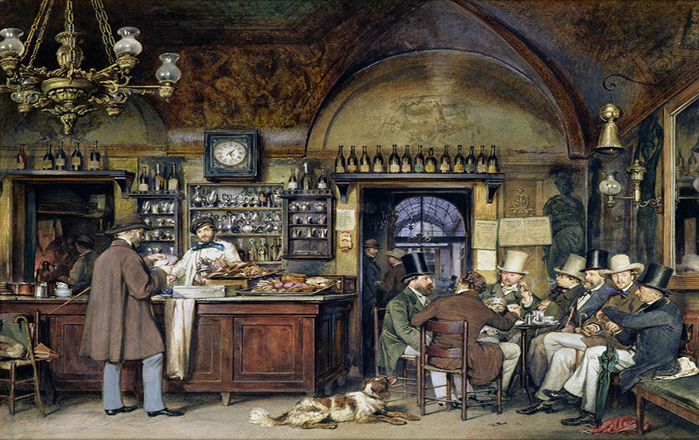

|
Gli imprenditori sono individui che assumono rischi finanziari e organizzativi per avviare e gestire un'attività economica al fine di ottenere profitto. Sono persone che hanno un'idea imprenditoriale o un progetto commerciale e sono disposte a investire tempo, risorse e energia per trasformarle in realtà.
Spesso introducono nuove idee, prodotti o servizi sul mercato. Possono sviluppare nuove tecnologie, migliorare processi esistenti o identificare esigenze non soddisfatte nei consumatori.
Sono disposti a prendere rischi finanziari, professionali e personali per perseguire le proprie idee imprenditoriali. Questi rischi possono includere investimenti finanziari significativi, incertezza riguardo al successo dell'attività e la possibilità di fallimento.
Sono responsabili della gestione dell'attività imprenditoriale. Questo può includere la pianificazione strategica, la gestione delle risorse umane, la gestione finanziaria, il marketing e la risoluzione di problemi operativi.
Devono essere creativi e adattabili per affrontare le sfide e sfruttare le opportunità che si presentano durante il percorso imprenditoriale. Devono essere in grado di trovare soluzioni innovative ai problemi e di adattarsi rapidamente ai cambiamenti del mercato e dell'ambiente circostante.
Sono spesso guidati da una visione chiara del loro obiettivo imprenditoriale e hanno una forte determinazione nel perseguire tale visione nonostante gli ostacoli e le sfide che possono incontrare lungo il cammino.

|
|